Agri-Innovation
ANNAPURNA is a compact vertical hydroponic farming system delivering year-round fresh food — anywhere people live.
"By 2050, 68% of the world's population will live in cities — yet our food still grows far from where we eat it."
Rapid urbanization is consuming agricultural land at an unprecedented rate. India loses over 30,000 sq km of farmland to urban expansion each decade.
Groundwater tables are falling across India's most productive farming regions. Conventional farming is unsustainably water-intensive — we cannot continue as before.
Erratic monsoons, heat waves, and extreme weather events make rain-dependent farming increasingly unpredictable, threatening food security for millions.
ANNAPURNA is a compact, modular vertical hydroponic farming system built for dense urban and semi-urban environments. Instead of spreading across acres of land, it stacks multiple plants into a small footprint — on your balcony, rooftop, or institution.
Built from accessible materials, automated with low-cost sensors, and designed to be repaired by anyone — it puts production-grade farming within reach of households, SHGs, and communities.
Small footprint, stackable growing levels. Assembled with standard plumbing parts — no special tools needed.
150L reservoir recirculates nutrient solution through all levels — zero runoff, minimal waste, maximum efficiency.
pH, EC/TDS, and climate sensors feed a rules engine that automatically adjusts dosing, lighting, and ventilation in real time.
5m of LED strips, 12–24V driver, timer or automation-controlled — enabling year-round growth independent of season.
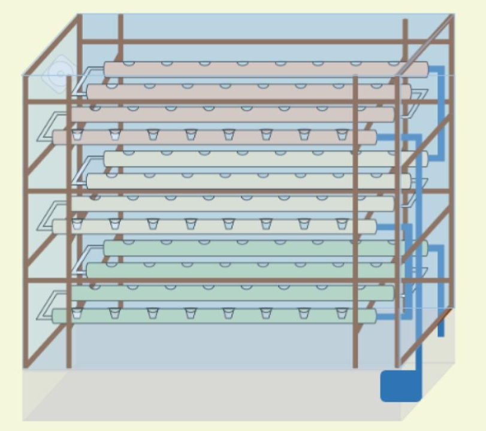
Plants don't actually need soil — they need nutrients, water, oxygen, and light. Hydroponics delivers all four directly, with zero waste and maximum precision.
Plants grow in inert media (cocopeat or rockwool) with roots bathed in a precisely calibrated nutrient solution — getting exactly what they need, when they need it.
Nutrient solution flows from a central reservoir through all grow channels and returns back — using 80–90% less water than soil farming by eliminating evaporation and runoff.
With nutrients delivered directly to roots and optimal lighting conditions, hydroponic plants grow 30–50% faster and produce yields up to 11× higher than soil equivalents.
Seeds are placed in cocopeat-filled net cups. With daily moisture, roots emerge in 9–10 days.
Healthy seedlings are inserted into the uPVC channels. The nutrient solution begins circulation immediately.
Sensors monitor pH and EC continuously. Automated peristaltic pumps dose nutrients to maintain ideal balance.
Leafy greens are ready in 21–30 days. Fruiting crops in 37–60 days — far faster than soil equivalents.
Data from controlled studies comparing hydroponic and soil-grown produce across key performance indicators.
| Parameter | 🌿 ANNAPURNA (Hydroponic) | Conventional Soil |
|---|---|---|
| Yield per sq. ft. | Up to 11× higher | Baseline |
| Water consumption | 80–90% less | Very high (irrigation + runoff) |
| Growth cycle (leafy) | 21–30 days | 45–60 days |
| First flowering (tomato) | Day 37 | Day 103 |
| Pesticide requirement | Minimal to none | Regular applications |
| Land required | Rooftop / balcony | Large open farmland |
| Seasonal dependency | None — year-round | High — monsoon dependent |
| Nutrient density | Higher phytochemicals | Variable, soil-dependent |
| Labour intensity | Low (automated) | High (plowing, weeding) |
A single ANNAPURNA unit dedicated to microgreens — India's fastest-growing premium produce category — can generate substantial net profit within the first year of operation.
Energy consumption: 0.5–1 kWh/day. System footprint: 12 sq. ft. Suitable for balconies, rooftops, and small commercial spaces.
Built and installed on a real balcony using uPVC pipes and a basic support frame, this prototype validated the core principles of ANNAPURNA under natural sunlight conditions. No artificial lighting — just 6–8 hours of daily sun, a simple nutrient system, and the right growing medium. Within 10 days, seeds became seedlings. Within 37 days, tomatoes had their first flowers — a milestone that takes soil plants over 100 days.
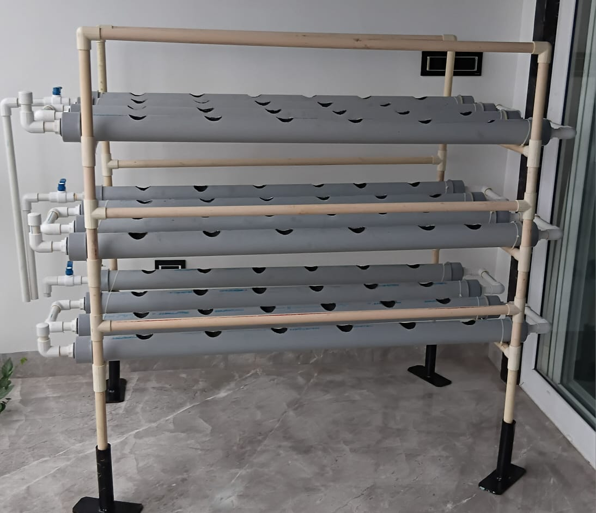
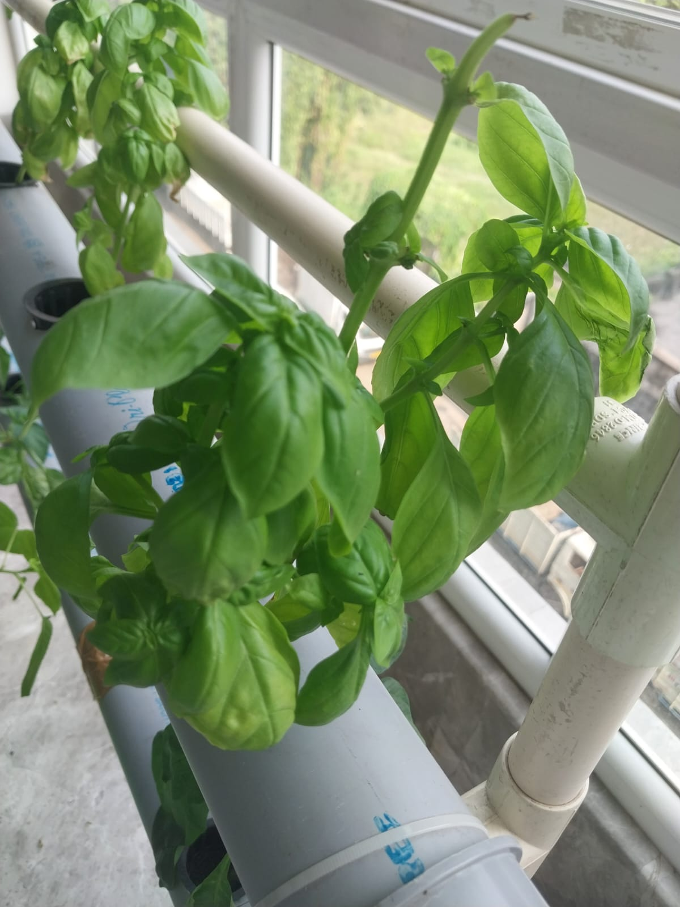
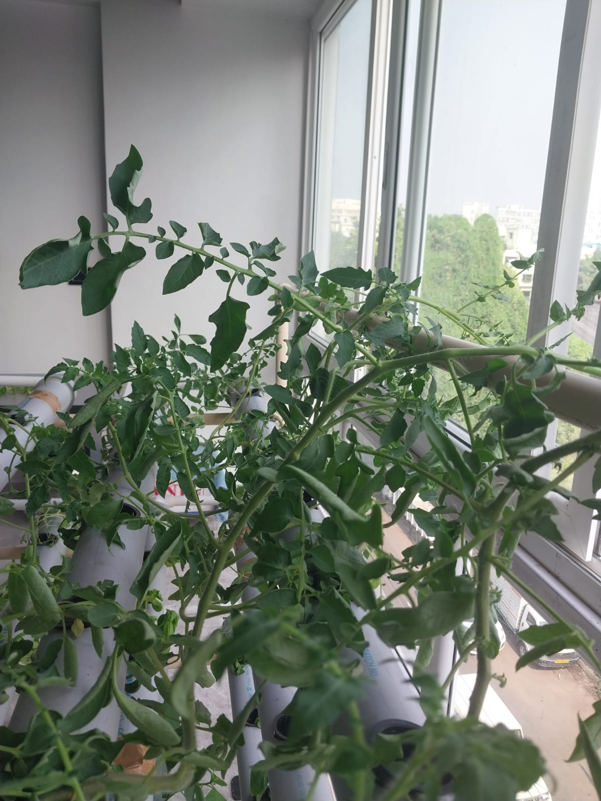
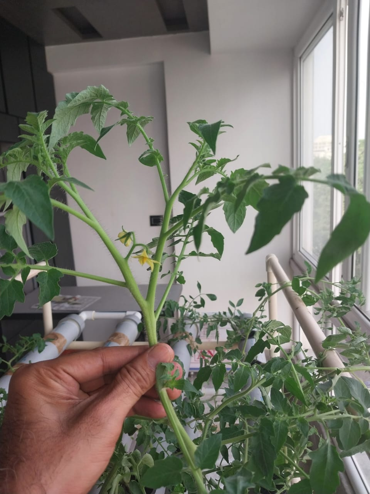
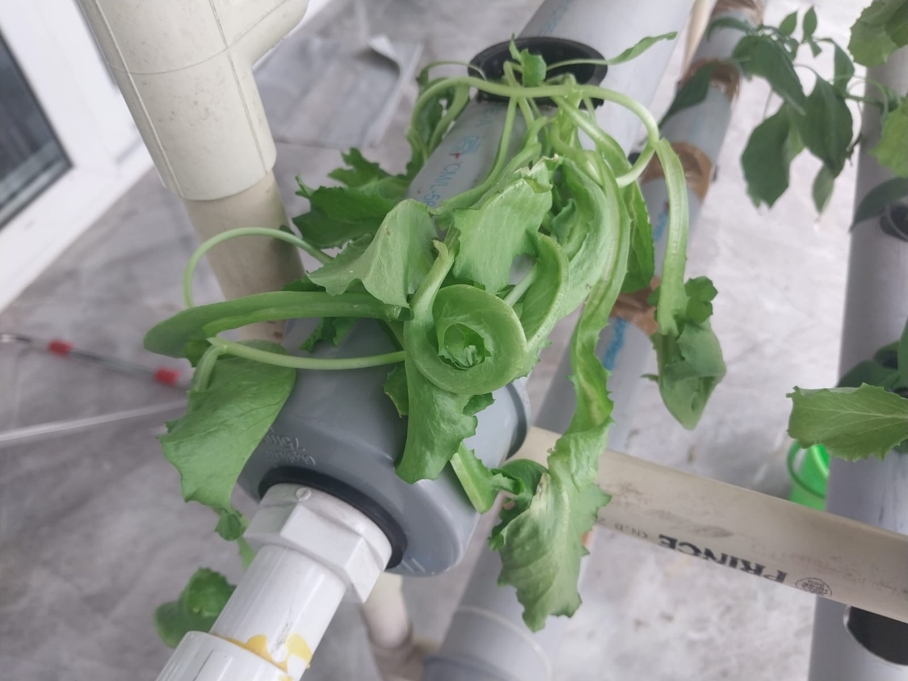
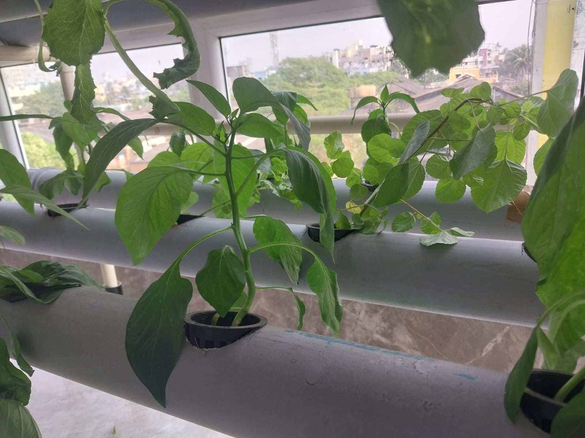
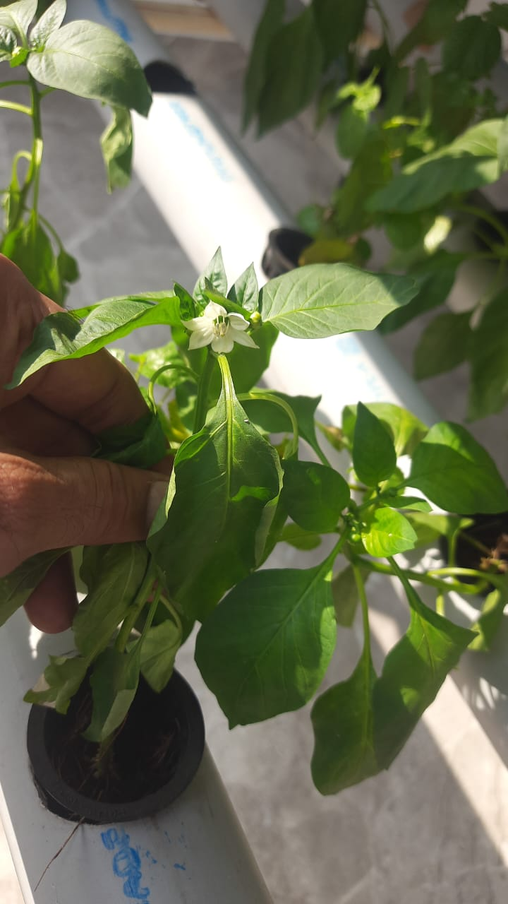
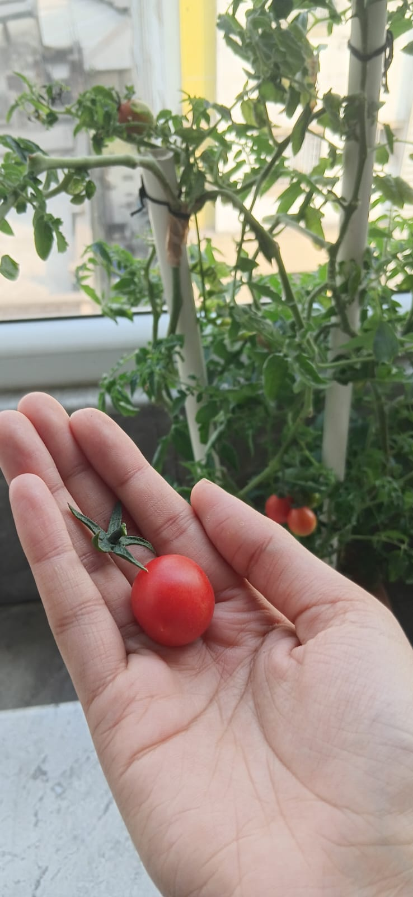
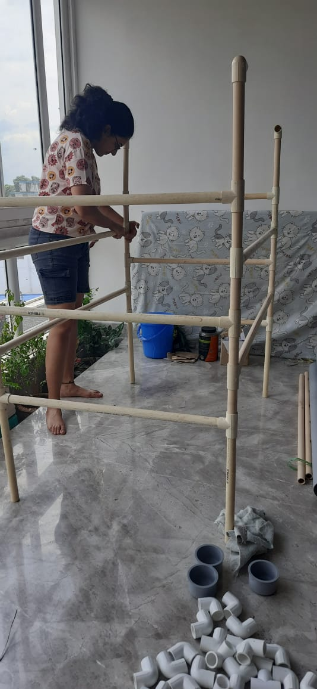
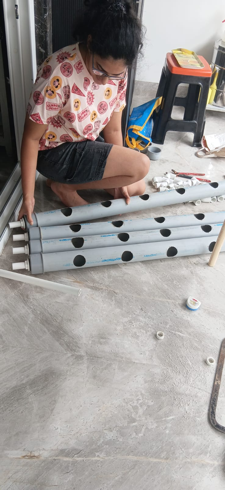
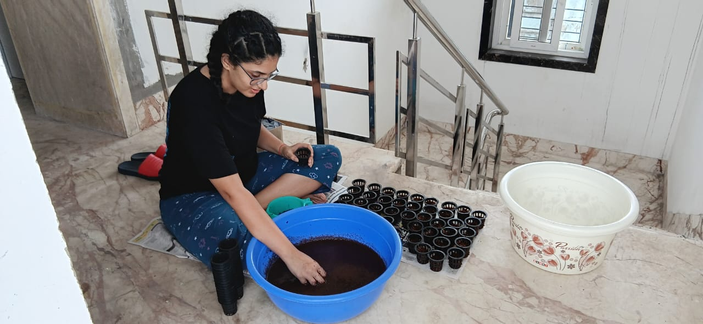
First flowers at Day 37. Dense canopy and vigorous growth by Day 27 — over 60 days ahead of soil-grown equivalents.
Italian basil and lettuce thrived simultaneously at compatible pH ranges. Ready for harvest within 3 weeks.
Demonstrated that fruiting crops can coexist with leafy greens in the same modular system with isolated nutrient feeds.
Hydroponic produce commands significant price premiums in both domestic and export markets, with growing demand from urban consumers and institutional buyers.
Fastest-growing premium segment. Chefs, hotels, cloud kitchens, and health-conscious urban consumers drive strong demand.
High velocity, quick cycle. Supermarkets and restaurants prefer consistent pesticide-free supply year-round.
Premium positioning vs. conventional tomatoes. Popular with urban retail and food service channels.
High-value, quick turnaround. Italian basil especially sought by restaurant and hotel supply chains.
Consistent quality and colour — ideal for supermarket chains and food processing industries.
High yield, fast cycle. Good fit for local delivery models and institutional supply contracts.
Middle East and EU markets pay significant premiums for consistent quality, pesticide-free certification, and reliable supply.
European restaurant and retail markets demand fresh aromatic herbs year-round — a gap hydroponic systems can uniquely fill.
Southeast Asian markets — Singapore, Malaysia, Japan — are active buyers of premium microgreens from certified growers.
GCC countries import large volumes. Hydroponic production enables the color and size consistency export buyers require.
At scale, ANNAPURNA's controlled environment supports ultra-high-value specialty crops for export premium segments.
Pesticide-free hydroponic produce can qualify for organic certification, unlocking additional export price advantages.
Every technology has constraints. Understanding them is part of designing solutions responsibly.
A fully equipped system costs ~₹21,738 upfront. While affordable compared to traditional farm infrastructure, it remains a barrier for very low-income households without microfinance support.
The pump, LED lighting, and sensors require continuous electricity. Power outages can disrupt the system. Solar integration is planned but adds cost.
Root vegetables (potato, carrot, radish) and large grain crops are not suitable for this vertical NFT system. ANNAPURNA is best suited for leafy greens, herbs, and compact fruiting plants.
pH and EC monitoring requires basic training. Incorrect nutrient ratios can harm plants. The companion app and guided workflows aim to reduce this barrier significantly.
Weekly nutrient solution replacement generates mild chemical wastewater. Proper disposal protocols are needed, especially at scale, to avoid soil or water contamination.
Anywhere people need fresh food. Almost everywhere, it turns out.
A daily kitchen garden delivering pesticide-free greens, herbs, and tomatoes — no plot of land needed.
A living classroom for biology, IoT, sustainability, and entrepreneurship. Students grow, learn, and eat.
On-site fresh produce for patient nutrition programs — zero transit time, zero contamination risk.
"Harvest-at-shelf" experiences for premium retailers and cloud kitchens demanding consistent, local supply.
Military outposts, disaster relief camps, and research stations — fresh food independent of supply chains or soil.
ANNAPURNA's closed-loop, low-water design directly informs bioregenerative life-support systems for long-duration space missions.
Precision farming meets intuitive design. The ANNAPURNA companion app puts complete system control in your pocket — from first seed to final harvest.
Live pH, EC/TDS, and air temperature–humidity readings via integrated sensors and Wi-Fi connected ESP32.
Push notifications when parameters drift out of range — before your plants notice the problem.
Step-by-step guided workflows for every crop — germination, transplant, nutrient schedule, and harvest timing.
Tailored suggestions based on your local climate, season, market demand, and unit configuration.
Connect with buyers, fellow growers, and agronomists — a digital ecosystem that grows alongside your plants.
ANNAPURNA is a living system. Each iteration gets smarter, more affordable, and more impactful.
A 50W solar panel + battery backup eliminates grid dependency, making ANNAPURNA viable in power-unstable regions and dramatically reducing operating costs.
Integration with a simple rooftop rainwater collection system for RO water supply — reducing recurring water input costs to near zero.
Computer vision-based plant health monitoring using camera modules — detecting deficiencies, diseases, and growth anomalies before they become problems.
Adding a fish tank below the grow structure creates a symbiotic loop — fish waste feeds plants, plants filter water — enabling protein production alongside vegetables.
Networked units sharing sensor data, nutrient supply, and logistics — creating micro food-production hubs at apartment complexes, schools, and community centers.
Collaborations with ISRO and space research institutions to adapt ANNAPURNA's closed-loop design for extra-terrestrial habitat life-support systems.
ANNAPURNA is designed for two parallel deployment paths — empowering individual households and enabling commercial enterprises simultaneously.
A complete starter kit with guided setup, the companion app, and an initial nutrient supply — enabling households, self-help groups, and small entrepreneurs to start producing premium food within days.
Multi-unit deployments for rooftop farms, institutional supply, export-oriented production, and co-working agri-hubs. Full automation, centralized monitoring dashboard, and supply chain integration.
As a 4th-year B.Tech CSE student at Kalinga Institute of Technology, Bhubaneswar, I had the privilege of participating in the IET India Scholarship 2025 — an inspiring platform that brings together young innovators from across the country. Being part of this journey allowed me to work deeply on ANNAPURNA, gain invaluable insights, and sharpen it through every stage of the competition. What began as an idea became a refined, battle-tested solution — shaped by the rigorous process IET created.
I extend my heartfelt gratitude to The IET for organising this remarkable initiative, for the critical feedback that pushed me to think harder, and for recognising work that genuinely strives to solve a real problem. A special note of thanks to my mentor, Prof. J. K. Roy, whose guidance after the Regional Round was transformative — his sharp critique and encouragement helped me present ANNAPURNA far more effectively at the National level, and his support played a direct role in this achievement.
Thank you to the jury, the organisers, and everyone who was part of this experience. It has been a truly meaningful milestone in my journey as an aspiring innovator.
"The right platform doesn't just give you an audience — it gives you the pressure, the peers, and the perspective to become better."
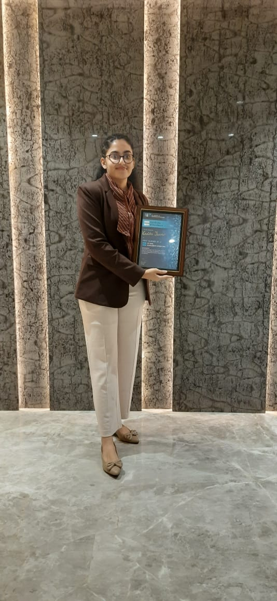
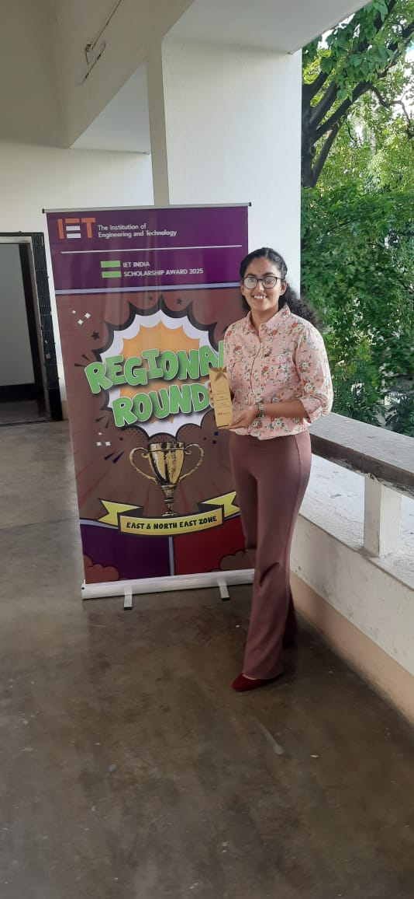
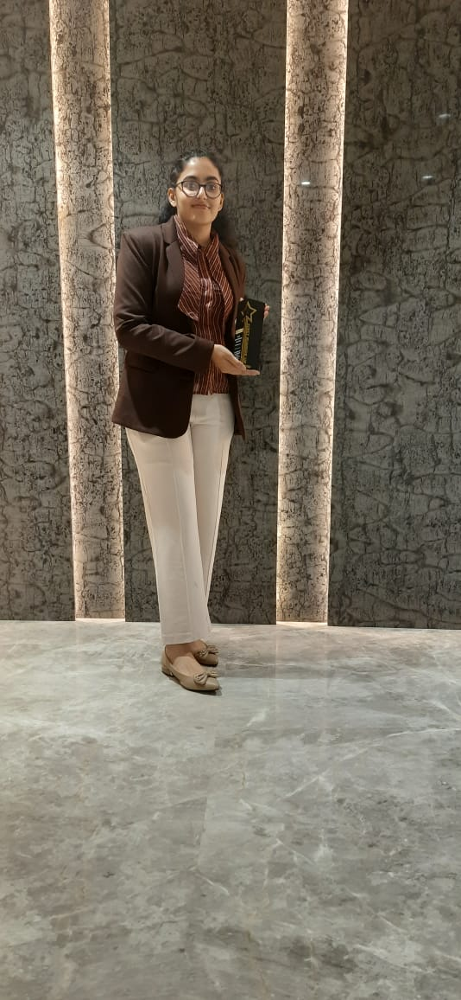
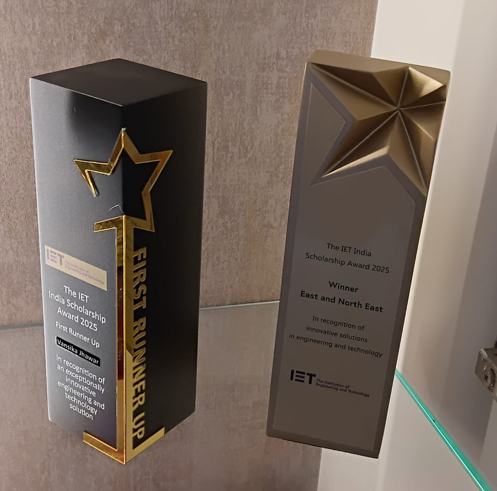
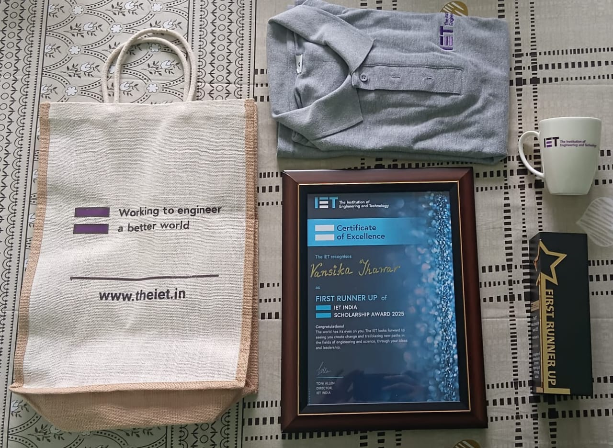
Whether you want to know more about the project, collaborate, invest, or simply grow your own food — we'd love to hear from you.
Vansika Jhawar
vansika.jhawar18@gmail.com
+91 9674795110